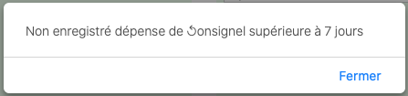
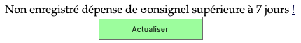
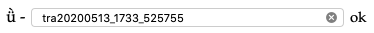
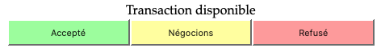

Si vous êtes dans la section Proposer (menu Agir fond vert clair)
- Penser votre proposition pour qu'elle soit faisable en plusieurs étapes plus petites
- Parlez-en avec la personne avec qui vous voulez faire l'activité
- Mettez-vous une note dans votre clalendrier pour faire les étapes en temps voulu
Si vous êtes dans la section Accepter (menu réagir fond blanc)
Si vous avez accepté la proposition
- Cliquez sur le bouton Actualiser. La proposition est transférée dans la section agir

- Parlez-en avec la personne avec qui vous voulez faire l'activité par étapes plus petites ou pour faire un projet garanti DD à plusieurs
- Mettez-vous une note dans votre clalendrier pour faire les étapes en temps voulu
Si vous voulez revenir à la proposition initiale pour la négocier
- Rechargez la proposition initiale par son code QR ou son numéro (clic ok)

- Cliquez sur le bouton négocions. La proposition est transférée dans la section agir

- Parlez-en avec la personne avec qui vous voulez faire l'activité
- Mettez-vous une note dans votre clalendrier pour faire les étapes en temps voulu